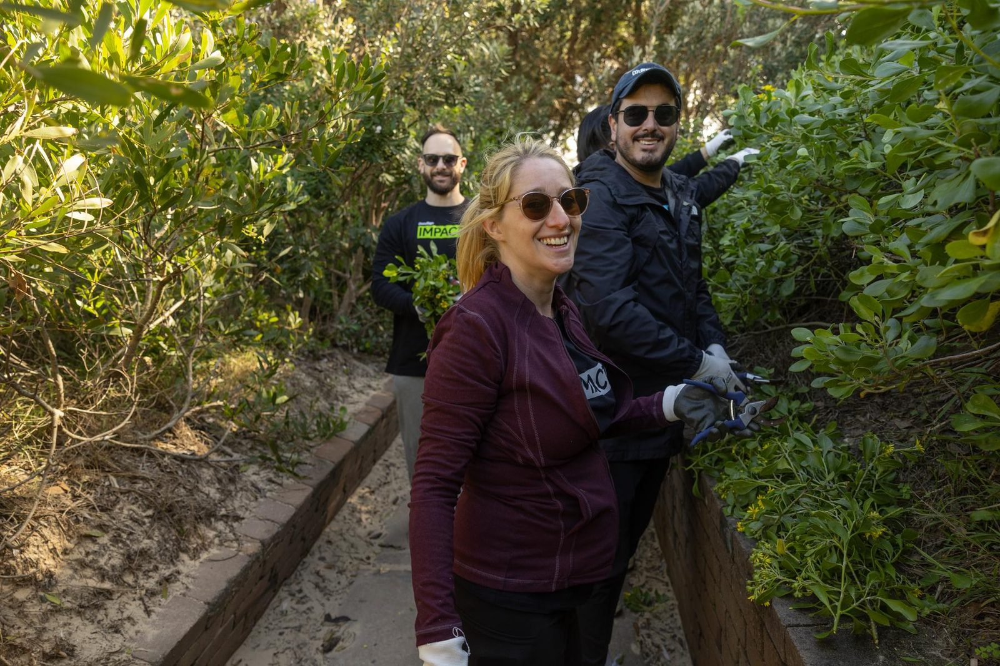

Workplace giving.
A small amount from each pay, before tax, often matched by your employer. Set and forget, and it adds up to habitat.
Giving from your pay
Together with our corporate supporters and their employees, we can make a positive difference to improve our environment and help protect natural Australia for future generations.
We invest workplace giving donations in projects that protect and preserve our national parks, and rehabilitate our precious native species and their vital habitats across Australia.
What is workplace giving?
Workplace giving, also known as payroll giving, lets you make tax deductible donations to charities straight from your regular pay. A small regular donation makes a big difference when combined with other regular donors, helping us protect and care for our unique wildlife.
Donations are deducted from your salary before tax, so you receive the tax benefit immediately rather than waiting until the end of the financial year. In some cases your employer may match your donation dollar for dollar, so do ask whether your company will match it.
Three steps, then it runs itself.
Ask payroll
Ask your payroll or people team to add us as a workplace giving recipient.
Pick an amount
It comes out of your pre-tax pay each period, so you get the tax benefit straight away.
Ask about matching
Many employers match dollar for dollar, which doubles what your gift does.
If your workplace already has a program
To donate regularly, simply ask your payroll department to deduct your nominated donation from your gross, pre-tax salary each pay period. It really is that easy.
For details on implementing a program, or questions about setting up a workplace donation, get in touch and we can provide you with more information.
We also have profiles on Benevity and GoodCompany, where employees can donate, volunteer or fundraise for us.
If you are an employer
Workplace giving works for employees, employers and for us. Employees see how small pre-tax amounts add up collectively, and companies find that a program brings organisational values to life, increases employee morale and supports engagement.
By matching employee donations you demonstrate a real commitment to your people, help build engagement, and of course double the financial support towards protecting natural Australia for future generations.
- Recognition of your company and employees supporting us on our social media channels
- Educational presentations: invite us to a morning tea so we can engage your employees on the work we do and the impact of our projects
- Impact reports that demonstrate your company’s CSR impact, your employee engagement initiatives, and the impact of the projects your company makes possible
- Corporate volunteering event opportunities
If there is no program yet
If your company doesn’t offer a workplace giving program, you can still support us with a regular donation as a Habitat Hero.
And if your company or business would like to start one, let us help. Our fundraising team would be happy to talk through your options.
Talk to our fundraising team.
Call us on 1800 898 626 or send us a message, and we will walk you through your workplace giving options.